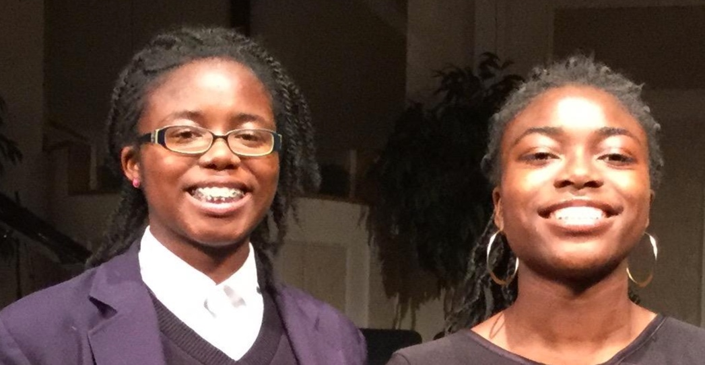
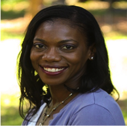
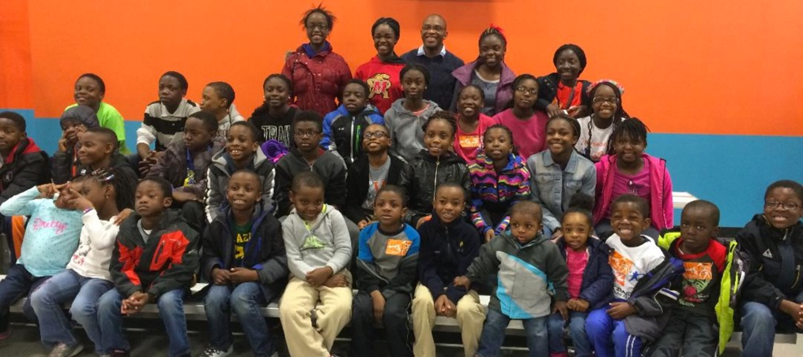
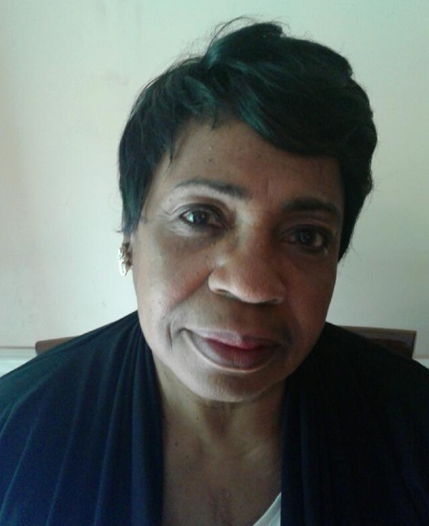

Children's Program
Utopia Diabe
Utopia Diabe -16 years old, a Minnesota native, a junior at Lanham Christian High School has been on the mission field (locally and internationally) at an early age of six years old. She accepted Christ at a young age and was introduced to the mission field by her mother, Founder and Executive Director of Dorcas Works International, who organized Toys for Tots drives, food drives and back to school drives for underprivileged families in Minnesota, partnering with the US Marines, Feed my Starving Children, Minneapolis Police Department, Here’s Life Inner City and Operation Classrooms. Utopia served on the distribution team handing toys out during Christmas time, accompanying her mother from door to door delivering Thanksgiving meals to families in North Minneapolis where she grew up. After relocating to Maryland in 2011 for her mom’s job, at age 10, Utopia travelled to Haiti and Liberia to serve in hospitals, schools and orphanages. She has led several drives (soap, food, clothing etc.) for projects in Haiti and Liberia. She is constantly collecting items in good condition to be shipped to Haiti or Liberia. Since 2011, Utopia travels to Haiti and lives in the village with the village kids and hosts a Christmas Party for kids. She collects toys and does a fundraiser. Utopia is also very industrious. She sews clothes and braids hair and uses the proceeds to buy school supplies, clothes, medical supplies and pay for medical bills for patients when she travels to Haiti and Liberia. She has spoken at several youth meetings, appeared on the front cover of the PG Gazette and the Baltimore Sun and she has spoken at “Let the Healing Begin” Women's Conference. Her message to youth is:
“We are privileged in America. You are not too young to aid those in need. When you travel, live and experience the daily struggles with other children in these countries, you will honor and fear God. It also evokes a certain respect and appreciation for your parents, your teachers and elders.”
Utopia currently resides in Maryland with her mother. Her long term career goal is to be a defense lawyer and prosecutor turned Judge in order to end the unfair criminal justice system in America. She will give alternative sentences for minor aggressions and eventually rise to the level of Supreme Court Justice.

D’mani and D’naja Washington
D’mani and D’naja are twin sisters who love the Lord. Their interests include: singing, drawing, foreign languages, cosmetology, reading and animation. They have had the privilege and honor to serve on the mission field both domestically as urban youth workers in New Orleans, Louisiana and overseas in Bangkok, Thailand teaching conversational English.

Kamillia White
Prior to life with children, Kamillia’s professional career experience is interesting and varied. She earned a BS in Electrical Engineering from Morgan State University in Baltimore, MD. From there she attained a MEng in Computer Engineering from Cornell University. She functioned as a computer analyst and system administrator for IBM, Duquesne Light Company, and Mellon Bank.
After over ten years of corporate experience, Kamillia recognized God’s calling to serve the Lord through working in the community. She has held leadership roles for a number of not-for-profit organizations. However, her service to God has been most evident in the many roles she has held in her church life. Kamillia has led administrative, financial, as well as educational and children’s ministries since accepting the Lord's call in April of 1994. She is currently a member of Church of the Great Commission where she serves alongside her husband of 20 years, Pastor Reginald J. White. The Lord uses her gifts working with the children and women of the church.
In addition, Kamillia serves as a receptionist and lunch program coordinator at The Geneva School, a Christian classical school in Winter Park, FL She also enjoys a home business with Mary Kay Cosmetics.
The Whites are blessed with three children, who are all students at The Geneva School. Kamillia was born and raised in the Washington, DC area, but prefers to call Pittsburgh, Pennsylvania, her home.

The Church of the Living God Children's Choir
The Church of the Living God children's choir are a group of children ranging in age from 5-13yrs old. Their desire is to share the love of Christ to all those willing to hear the gospel message. They love the Lord and also love having fun so they try to include both during their times of ministry.

Pastor Carole Cloud
Carole Cloud was born in Cleveland, Ohio. She has been married to W. Eric Cloud since January 1966 thus this year celebrated 49 years of marriage. The proud mother of two biological children and one foster child, she celebrates all of their accomplishments and spiritual growth. Her son is the Pastor of “The Soul Factory” church in Forestville, Maryland and Atlanta, Georgia. Both of her daughters are registered nurses and pursuing degrees as nurse practitioners. Carole also known as mom to several women she mentors in the Washington metro area.
Carole is a graduate of Georgetown Law School in Washington, DC. She has been employed as an associate law clerk as she works alongside her husband at the Cloud Law Firm in Largo, Maryland.
Carole’s Spiritual journey began at an early age. In 1985 she joined The Church of the Great Commission where she was ordained and Elder and Pastor of the Children’s ministry (which she established). Elder/Pastor Cloud has many gifts to share with children as well as adults. Her dramatic ability enhances the word of God and brings it alive. Many times she has played the role of a clown to help the children engage the joyfulness of God love.
In addition to her amazing love for children, God has given her a passion for incarcerated persons. She has volunteered in prisons for both men and women for more than 35 years. One of her greatest joys has been conducting weekly bible studies and some Sunday services at the Maryland Correctional Institute for Women (MCIW) in Jessup, Maryland for 20 years. Minister Cloud believes that MCIW has been a tremendous evangelistic mission as she witnesses lives being changed from the inside out.
Jeheiel Smith
Ninth-grader Jeheil Lamoni Smith is 14 years old and considered a musical prodigy by many music experts. The multi-talented youngster is a musician at Pleasant Hope Baptist Church in Baltimore and has already played at several church & community events in the Baltimore area and around the region. He performed at the Martin Luther King Breakfast in Cambridge this past January and is scheduled to play at the Queen City Elks Lodge in Salisbury later this summer.
Jeheiel plays piano, organ, trumpet, saxophone, flugelhorn, trombone, viola, guitar, four and five string basses, and drums.
The son of Korcoran and Henriell Martin Smith, Jeheiel has studied at the Peabody Conservatory, Nathan Carter School of Music, and is now studying at the Baltimore School for the Arts. He has even been offered a full scholarship to Morgan State U.
The name Jeheiel (jeh HI el) means “God Liveth”. His mother is from Salisbury and the daughter of Henry Martin and Shirley Martin-Gunter.